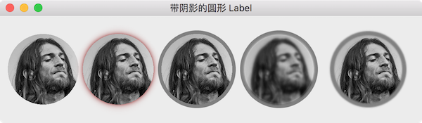

圆形头像大家应该都见过不少软件里用过吧，例如 QQ 的好友列表，网页里的人物头像，有没有想过在 Qt 里怎么做到呢？
这一节中就来介绍怎么实现下图中的圆形 QLabel，然后扩展到给 QLabel 添加阴影效果、模糊效果以及加上边框:

圆形 Label
最核心的就是圆形 QLabel 的实现，有很多种方法能够做到，这里使用 QSS 来实现: Border Image + Border Radius，也就是几行代码的事:
- 圆形: 先设置 QLabel 的大小为固定大小，这样当窗口大小变化时不会影响 QLabel 的大小，并且设置 border-radius 为 QLabel 高度的一半
- 必须正好是一半出来的效果才能是正圆
- 大于一半 border-radius 就失去了效果，出来的是矩形，这应该是 QSS 的 Bug，CSS 里就不这样
- 小于一半的效果是圆角矩形
- 背景: 为了让背景图缩放填满 QLabel，需要使用 border-image 并且设置 QLabel 边框的宽度为 0
1 | QQLabel { |
上面的 QSS 就能得到左边第一个圆形 QLabel 的效果。
加上边框
虽然使用 border: 6px solid gray 可以给 QWidget 增加边框，但是由于上面为了实现圆形 QLabel 时需要把背景图铺满 QLabel，已经把它的边框宽度设置为 0，所以就不能再使用 border 了。采用曲线救国的办法，把 QLabel 布局放到一个 QWidget 里，并把这个 QWidget 设置为圆形的同时使用 border 加上边框。因为 QLabel 在 QWidget 中，这样看起来就像是给圆形 QLabel 加上了一个边框，增加下面的 QSS 后得到的效果如图中第三个 QLabel:
1 | .QWidget { |
提示:
为了效果更好，布局的时候需要设置布局对象的 margin 为 0，避免边框和 QLabel 之间有间隔。因为背景图是经过缩放铺满 QLabel 的，所以不会完全的平滑，
padding: -1px让 QLabel 扩大一点点，把边缘绘制到边框上，效果看起来更好，这些细节必须经过慢慢的调教体验才能有更深的感触。
阴影效果
CSS 中有 box-shadow 添加阴影效果，可惜 QSS 中没有，为了给 QLabel 增加阴影效果，可以使用 QGraphicsDropShadowEffect 来实现:
1 | QGraphicsDropShadowEffect *shadowEffect = new QGraphicsDropShadowEffect(this); |
模糊效果
模糊效果使用 QGraphicsBlurEffect 实现:
1 | QGraphicsBlurEffect *blurEffect = new QGraphicsBlurEffect(this); |
思考
这里演示使用的是 QLabel，有的时候设计的是圆形按钮 (还要处理 hover, pressed 等状态)，怎么实现呢？
第 5 个图标模糊了边框，没有模糊背景，这里没有提供实现，想一下应该怎么做呢？